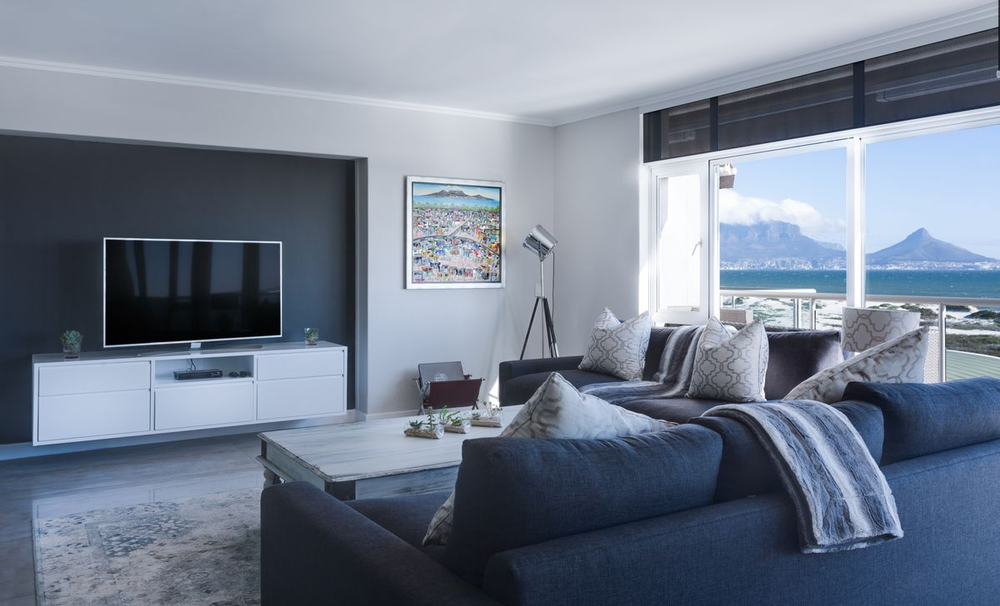

Questions About Sleep Care?
People often have questions before discussing sleep concerns, arranging an evaluation, or beginning a care conversation. Explore our clinical guidance below to understand what to expect in clear, accessible language.

“Good Information Should Make the Next Step Feel Clearer.”
Every question below is answered using neutral clinical principles. Filter by category or browse all topics to find the guidance most relevant to your sleep health.
A sleep study (such as overnight in-lab polysomnography or home sleep apnea testing) evaluates physiologic signals during sleep—including respiration, heart rhythm, blood oxygen saturation, brain waves, and body movements. It helps clarify underlying nocturnal disturbances when someone experiences persistent snoring, unrefreshing sleep, nocturnal awakenings, or daytime fatigue.
Patients stay in a quiet, comfortable private room designed to feel like a calm bedroom setting rather than an institutional ward. Non-invasive surface sensors are gently placed on the scalp, face, chest, and legs to monitor sleep architecture and breathing telemetry while our clinical staff observe the study throughout the night.
Yes. You will receive practical guidance well before your appointment. Standard suggestions include washing hair to ensure good sensor contact, adhering to your normal medication schedule (unless specifically instructed otherwise by your physician), avoiding afternoon caffeine, and bringing comfortable sleep attire.
The raw physiologic recordings are scored and reviewed by our sleep specialists. Findings are then discussed during an unhurried follow-up consultation where your diagnostic report is explained in clear, plain language so you understand the results and any appropriate care options.
Continuous Positive Airway Pressure delivers a steady, calibrated stream of gentle, filtered air through a mask interface. This gentle pneumatic pressure acts as a splint to keep the upper airway open, preventing breathing pauses, oxygen desaturations, and sleep fragmentation.
A consultation typically begins by reviewing your diagnostic sleep findings, discussing your natural sleep position and nasal breathing habits, and exploring appropriate mask interfaces (such as nasal cushions, full-face masks, or nasal pillows) to find a comfortable fit.
Yes, acclimatization is an ongoing process. Follow-up appointments frequently address mask seal comfort, heated humidification adjustments, pressure ramp settings, and tube management to ensure the therapy is practical and sustainable in your nightly routine.
It is beneficial to bring your current mask, headgear, and either the device itself or its SD card/cloud telemetry login so your clinician can examine usage compliance, residual apnea index, and pressure efficacy.
Sharing your sleep onset latency (how long it takes to fall asleep), frequency of nighttime awakenings, morning wake-up times, and daytime fatigue levels gives your clinician a clear picture of your natural sleep schedule and possible hyperarousal factors.
Clinicians review your environmental sleep hygiene, timing of meals and screen light, caffeine intake, and bedroom associations using structured sleep diaries to identify behavioral patterns that can be gently restructured.
Noting when you begin winding down, whether you read or use devices in bed, and how anxiety about sleep affects you provides valuable context into whether sleep consolidation, stimulus control, or cognitive reconditioning may be helpful.
The focus is on evidence-informed behavioral sleep medicine principles—such as Cognitive Behavioral Therapy for Insomnia (CBT-I)—emphasizing re-aligning your circadian clock and breaking negative associations with the bed.
You can request an evaluation directly through our online consultation modal, our website contact form, or by contacting our clinic by phone. Our clinical coordination team will connect with you to discuss timing and appointment details.
Bring a list of current medications, any notes regarding your sleep patterns or partner observations (such as snoring or restlessness), and previous sleep study records if you have had an evaluation performed previously elsewhere.
Yes. Follow-up visits are intentionally unhurried and structured specifically for collaborative conversation, reviewing progress, addressing comfort issues, and adjusting your care pathway as your sleep patterns evolve.
You can contact our clinical reception team through our online contact page, by telephone at (800) 766-6225, or by submitting a consultation inquiry online. We are glad to help clarify administrative or preparation questions.
Before You Begin.
Preparing for your sleep evaluation helps our clinical team understand your situation clearly. Here are four thoughtful steps to consider before your consultation.
Think About Your Sleep
Reflect on your typical sleep patterns, morning feelings, daytime alertness, and when concerns first began to be noticeable.
Note Your Questions
Write down any specific concerns, nocturnal awakenings, or questions you wish to explore with our clinical specialists.
Bring Relevant Information
Bring any information that may help you explain your sleep concerns, such as current medication lists or notes from previous evaluations.
Start the Conversation
Engage in an unhurried, collaborative discussion with our clinicians to determine what care pathway makes the most sense.
You are an active partner in your care. Your questions and experiences shape every step of your diagnostic journey.

Still Have a Question?
If you are unsure where to begin, a conversation can be the simplest next step. Our clinical team is here to answer your questions and help you understand what care pathway is right for you.